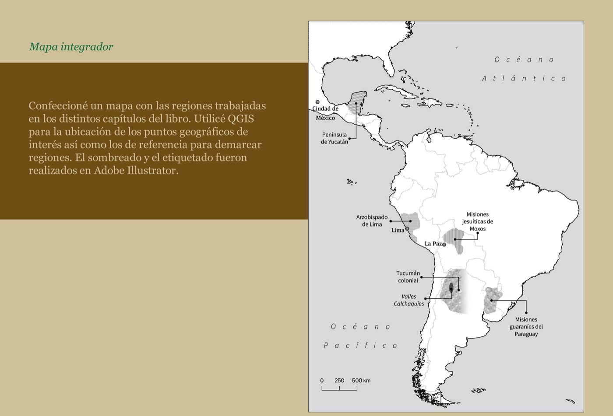
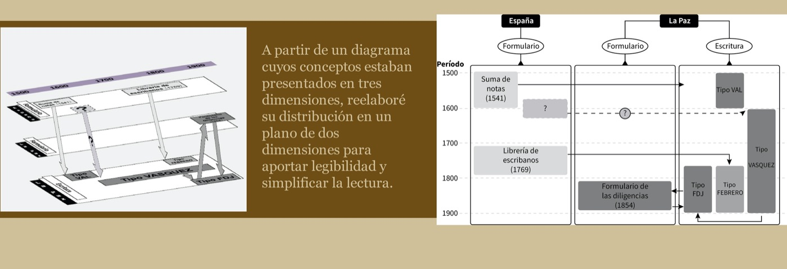

El mundo hispánico moderno y su universo documental The Modern Hispanic World and Its Documentary Universe
Mapa y diagrama para un libro académico: ubicación geográfica de las regiones trabajadas con QGIS, y reelaboración de un diagrama conceptual para simplificar su lectura. Map and diagram for an academic book: regions located with QGIS, plus a conceptual diagram reworked for clarity.
Ver caso completo en Behance See full case on Behance